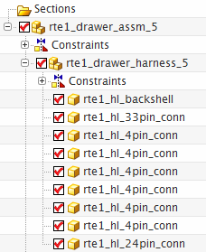
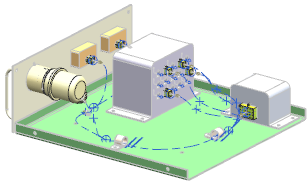
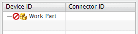
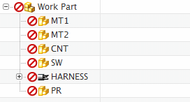

Import electrical data into the wiring harness
-
Open the Assembly Navigator
 and pin it in place.
and pin it in place.
-
Double-click rte1_drawer_harness_5 to make it the Work Part.

If you expand the wiring harness node, you see that it has the same connector arrangement in it that you previously added to your own harness subassembly.

-
Make sure you are in the Routing Electrical application.
-
On the Resource bar, click the Component Navigator
 tab.
tab.

-
Right-click the navigator background and choose Import→Merge.
-
From the Files of type list, make sure Bookmark Files and PLM XML (*.plmxml) is selected.
-
In the Route List File dialog box, double-click rte1_hl_route.plmxml.

The component data is imported into the navigator.